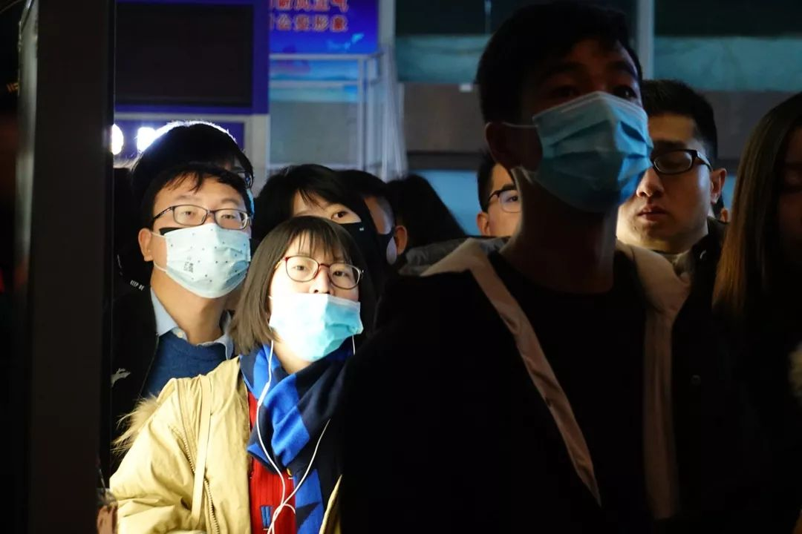

武汉肺炎疫情更新：15名医务人员感染，全国累计218例确诊
原文链接 备份链接 截至20日晚上20点，境内累计确诊新型冠状病毒感染肺炎病例218例，疑似病例7例，死亡4例，治愈出院25例。 武汉共有15名医务人员确诊为新型冠状病毒感染的肺炎病例，另有1名为疑似病例。 国家卫健委高级别专家组组 …
21.01.2020

本文字数：3771，阅读时长大约6.5分钟
导读：“武汉肺炎是否人传人”这个问题，一直受外界关注。在官方没有明确确认之前，公众的自我防护也由此减弱，直到北京、上海、深圳出现新发病例，公众才开始真正意识到：武汉肺炎原来不简单。
作者 | 第一财经 马晓华
1月20日下午，在针对“新型冠状病毒感染的肺炎疫情”有关防控情况记者问答会上，国家卫健委高级别专家组组长钟南山院士证实了武汉肺炎的“人传人”，且有医护感染。
“大概在全国四五个省市，然后国外都发现有这个关系，几乎都跟武汉有关系——去过武汉、从武汉来——证实了有人传人的传染。也证实了有医务人员的感染。”钟南山表示。
“武汉肺炎是否人传人”这个问题，一直受外界关注。在官方没有明确确认之前，公众的自我防护可能由此减弱，直到北京、上海、深圳出现新发病例，公众才开始真正意识到：武汉肺炎原来不简单。
疫情亦开始扩散。据官方通报，截至1月20日24点，我国境内累计报告新型冠状病毒感染的肺炎确诊病例291例（湖北省270例，北京市5例，广东省14例，上海市2例）；疑似病例54例（湖北省11例，广东省7例，四川省3例，云南省1例，上海市7例，广西壮族自治区1例，山东省1例，吉林省1例，安徽省1例，浙江省16例，江西省2例，海南省1例，贵州省1例，宁夏回族自治区1例）。日本通报确诊病例1例，泰国通报确诊病例2例，韩国通报确诊病例1例。
从发现到扩散，从12月31日到1月21日，武汉肺炎事发20天后，有必要对此次疫情防控的手段和信息发布做一次梳理和复盘。

未见“明显人传人”时的松懈
2019年12月30日，坊间流出一份据称是武汉市卫健委所发的《关于做好不明原因肺炎救治工作的紧急通知》。这份通知显示，武汉市部分医疗机构陆续出现不明原因肺炎病人，要求各有关医疗机构做好医疗救治工作。
这是“武汉肺炎”出现的最早的一个信号。
12月31日，武汉市卫健委发布了第一则通报：近期部分医疗机构发现接诊的多例肺炎病例与华南海鲜城有关联，已发现27例病例，其中7例病情严重，其余病例病情稳定可控，有2例病情好转，拟于近期出院。
在武汉市组织同济医院、省疾控中心、中科院武汉病毒所、武汉市传染病医院及武汉市疾控中心等单位的临床医学、流行病学、病毒学专家进行会诊后，专家从病情、治疗转归、流行病学调查、实验室初步检测等方面情况分析认为，上述病例系病毒性肺炎。
这是首次对于“武汉肺炎”的认知——“病毒性肺炎”。且专家认为，此时病毒未发现明显人传人现象，未发现医务人员感染。
“没有明显的人传人这个信号很重要，因为目前已知病毒所导致的病毒性肺炎，基本都是人传人的。也就是说，这将是一个未知的新病毒。”一位病毒学专家认为。
事实上，在这则通报中，武汉市卫健委也排除了已知病毒。“到目前为止调查引起病毒性肺炎的病毒以流行性感冒病毒为常见，其他为副流感病毒、巨细胞病毒、腺病毒、鼻病毒、冠状病毒等。”
武汉肺炎疫情在“未见明显人传人”的结论下继续持续发展。
华南海鲜市场一时间也未曾关闭。
12月31日13时，第一财经记者来到华南海鲜市场，看到商户均在正常营业，很少有歇店情况，也很少有人戴口罩。
一位商户告诉第一财经记者，商场会做定期消毒，并不是因为有人得肺炎而专门消毒。
防控上这种短暂的松懈，与不明原因肺炎患者人数的不断上升，对比起来有点不相适宜。
2020年1月3日，武汉市卫健委发出第二则通报：截至1月3日8时，该市共发现符合不明原因的病毒性肺炎诊断患者44例，其中重症11例。
1月5日，武汉市卫健委发出第三则通报：截至1月5日8时，该市共报告符合不明原因的病毒性肺炎诊断患者59例，其中重症患者7例。
患者在增加。通报结论依然为：“初步调查表明，未发现明确的人传人证据，未发现医务人员感染。”
关于对病毒本身，通报明确给予了回应：已排除流感、禽流感、腺病毒、传染性非典型肺炎（SARS）和中东呼吸综合征（MERS）等呼吸道病原。病原鉴定和病因溯源工作仍在进一步进行中。
这则通报已经明确，引发武汉肺炎的是将是人类尚未认识的“新发病毒”。而历史上那些新发病毒如SARS、中东呼吸综合征、艾滋病毒、高致病禽流感等，都是来自于野生动物。“野生动物源性病毒的跨种感染”在此时的武汉肺炎病毒追踪中，理论上已经锁定了目标。
“引发武汉肺炎的病毒可能来自野生动物，华南海鲜市场有卖野味的，而且是武汉是候鸟栖息地，病毒在这里的野生动物体内混合，是随时可以发生的。”上述病毒学专家表示。
引发武汉肺炎的病毒可能来自野生动物的这种猜测，在第三道通报中已经得到印证：“对华南海鲜城采取休市措施，并开展环境卫生处置和进一步的卫生学调查。”
猜测终归是猜测，医学毕竟是一门科学，需要的是科学证据。1月11日，武汉市卫健委发出第四则通报，以专家解读的形式告知公众：“不明原因的病毒性肺炎”病原体初步判定为新型冠状病毒。
病毒找到了，疫情在持续发展，且开始出现死亡病例。
第四则通报称：截至2020年1月10日24时，武汉初步诊断有新型冠状病毒感染的肺炎病例41例，其中已出院2例、重症7例、死亡1例，其余患者病情稳定。所有密切接触者739人，其中医务人员419人，均已接受医学观察，没有发现相关病例。
“冠状病毒的属性就是传染性，而且新冠状病毒与SARS在基因上有78%同源性，即与SARS是孪生姐妹，其所表现的临床症状为严重急性呼吸窘迫综合征，新冠状病毒也是这个。此时就应该启动类SARS防控了。”上述病毒专家表示。
不过，此时通报的口径依然是：未发现医务人员感染，未发现明确的人传人证据。
通报口径上的变化，一直到1月14日的第七道通报才最终有所体现。
第七道通报：武汉肺炎走出国门口径变化
1月14日，武汉卫健委发出第七则通报：该市无新增新型冠状病毒感染的肺炎病例，无治愈出院病例，无新增死亡病例报告，累计报告新型冠状病毒感染的肺炎病例41例，已治愈出院7例，在治重症6例，死亡1例。另，泰国通报诊断1例来自武汉的新型冠状病毒感染的肺炎病例。
不过在这则通报中，武汉肺炎的疫情其实已经开始发生变化：从“未见明显的人传人”到“不排除有限人传人”。
该通报中关于“新型冠状病毒感染的肺炎疫情知识问答”称：现有的调查结果表明，尚未发现明确的人传人证据，不能排除有限人传人的可能，但持续人传人的风险较低。且目前确诊的41例病例中，发现一起为家庭聚集性，夫妻两人发病，丈夫先发病，为华南海鲜批发市场从业人员，妻子否认有华南海鲜批发市场暴露史。
这对“夫妻病例”，第一财经在2019年12月31日已经采访到相关患者：丈夫先患病，妻子后患病。
“这种家庭聚集性病例，已经有了人传人的迹象，且重症病例在20%左右，应该采取烈性传染病应对措施来防控了。”一位流行病专家表示。
然而这时，对于武汉肺炎疫情的防控并没有因为“家庭聚集性”人传人迹象和泰国出现病例而有明显改变。
唯一改变的是在以后的几道通报中缺少了一段内容：未发现医务人员感染，未发现明确的人传人证据。
疫情继续扩散。1月20日，北京市大兴区卫健委和广东省卫健委分别通报新型冠状病毒感染的肺炎情况。其中，北京大兴区确诊2例新型冠状病毒感染肺炎病例；广东深圳确诊1例。
1月20日晚，中共中央总书记、国家主席、中央军委主席习近平对新型冠状病毒感染的肺炎疫情作出重要指示：要把人民群众生命安全和身体健康放在第一位，坚决遏制疫情蔓延势头。国务院总理李克强主持召开国务院常务会议，进一步部署新型冠状病毒感染的肺炎疫情防控工作，要求有力有效遏制疫情。
随后发布的便是国家卫健委高级别专家组专家们接受记者采访的内容，该组组长钟南山院士证实了武汉肺炎的“人传人”，也证实了有医务人员的感染。
春运已经启动，离开武汉的人早已成倍于平时。一位非湖北省的地方疾控人员表示：“目前没有疫苗，第一防线是健康教育，搞好自我防护；然后出现病人到医院就诊，对可疑病例报疾控机构检测，如确诊，一方面由医院隔离治疗，另一方面由疾控机构对密切接触者追踪并采取隔离观察和相关环境消毒等措施。发现病人的第一关口是医院。”
国家卫健委高级别专家组成员曾光表示，疫情现在处于早期，必须得加强防控措施，让每个老百姓都知道。春节人口流动是很重要的一个因素，希望人群现在能不到武汉去就不去，武汉人能不出来就不出来。这不是官方的号召，是专家组的一些建议。
然而，武汉目前已经处在离城、返城高峰时期。武汉公安交通部门1月18日公布的信息显示，武昌站、汉口站周边高峰拥堵延时指数比上个月分别上升 15.3%、10.5%；武昌站、宏基客运站周边道路高峰拥堵延时指数较上周增长 26.3%，较上月同期增长 24.8%。
每个人都热爱家乡，武汉的外来人口返乡过年也成为一个极为普通的事情。根据武汉市文化和旅游局发布的“2018年春节统计信息”，2018年武汉在春节期间发送人数为232.82万人。
之前更有互联网企业奇虎360大数据中心所发布2017年春节“空城指数”，武汉排名全国第九。这个“空城指数”是360基于9亿用户春节前夕至除夕的迁徙态势分析而来。据统计，2018年春节全国空城率最高的十大城市分别是东莞、佛山、广州、深圳、长沙、上海、苏州、北京、武汉、郑州。武汉空城率48.18%，也就是说，近一半人口离开这座城市外出过年。
“这个病毒的潜伏期中位数是9天，目前所设的检验设备只能起到对发烧患者的监测，对于病毒携带者没有办法识别，未来可能有更多省份因为人口流动而出现新发病例。”一位流行病学专家表示。
一年一度的春运高峰即将到来，数亿人口或返乡或出游，这场防控大战也将进入最艰难最关键的时刻。
【推荐阅读】
钟南山肯定新型冠状病毒肺炎人传人


原文链接 备份链接 截至20日晚上20点，境内累计确诊新型冠状病毒感染肺炎病例218例，疑似病例7例，死亡4例，治愈出院25例。 武汉共有15名医务人员确诊为新型冠状病毒感染的肺炎病例，另有1名为疑似病例。 国家卫健委高级别专家组组 …
原文链接 备份链接 武汉肺炎新的确诊病例突然增加了。1月17日新增17例，16日新增4例。 泰国和日本出现三例确诊病例，中国香港、越南、新加坡等地出现了疑似病例。 但内地在武汉之外没有报告，很可能是其他地区没有对该病毒进行检测。这种 …
原文链接 备份链接 新型冠状病毒感染肺炎疫情扩大。武汉本地两天新增确诊136例，死亡1例，治愈出院6例。 北京大兴区新增2例，有武汉旅行史；广东深圳新增1例，曾到武汉探亲。这是内地首次在武汉之外的城市报告病例。 国家卫健委卫生应急办 …
原文链接 备份链接 武汉卫健委最新通报，“不明原因肺炎”已排除SARS和MERS，但病原体仍未明确。 武汉患者已增至59例，重症7例，均在接受隔离治疗，无死亡病例。 香港特区等地加强了对来自武汉人员的监测，香港每日公布疑似案例，最新 …
原文链接 备份链接 共27例病例，大多是武汉华南海鲜城经营户。7例病情危重，其余病情可控，有2例病情好转拟近期出院。 不明原因肺炎，是2003年SARS事件后，对SARS病例和人禽流感病例及其它传染性呼吸道疾病监测中用的概念。 …